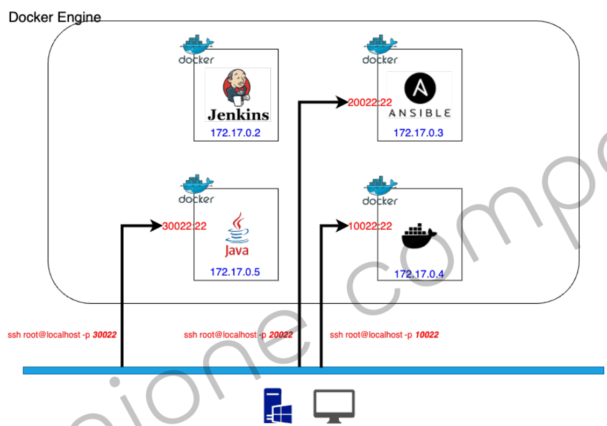
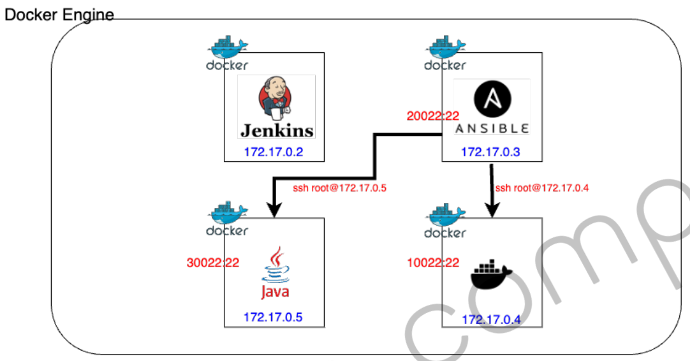
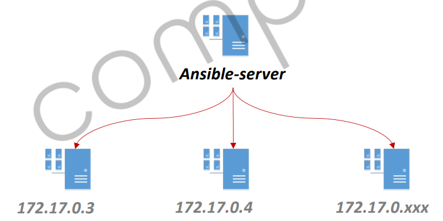

ci-cd-section-01-ch-04-docker-ansible
docker run --privileged \
-itd --name ansible-server \
-p 20022:22 -p 8081:8080 \
-e container=docker \
-v /sys/fs/cgroup:/sys/fs/cgroup \
edowon0623/ansible:latest /usr/sbin/init
privileged --privileged 플래그는 컨테이너에 모든 권한을 부여하며, 장치 cgroup 컨트롤러가 적용하는 모든 제한을 해제합니다. Docker 내에서 Docker를 실행하는 등 특별한 사용 사례를 허용하기 위해 존재 합니다.
DooD 와 DinD 차이
앤서블 도커 안에 도커 실행하기 현재 엔서블 컨테이너 내부에 도커 엔진이 설치되어 있습니다. 도커 엔진을 실행하여 도커를 실행합니다. (DinD)
ssh root@localhost -p 20022
// 앤서블 도커에 20022 포트로 ssh로 접속합니다.
// 엔서블 도커안에 이미 설치된 도커 엔진을 실행하고, 상태를 확인합니다.
systemctl start docker
systemctl status docker
docker.service - Docker Application Container Engine
Loaded: loaded (/usr/lib/systemd/system/docker.service; disabled; vendor preset: disabled)
Active: active (running) since Sat 2024-02-03 08:07:53 UTC; 44s ago
Docs: https://docs.docker.com
Main PID: 171 (dockerd)
Tasks: 14
active (running)으로 도커 안에 도커가 실행된 것을 확인 할 수 있습니다.
엔서블 기본 명령어 ansible 버전 확인
[root@51144f7a4712 ~]# ansible --version
ansible [core 2.13.4]
config file = None
configured module search path = ['/root/.ansible/plugins/modules', '/usr/share/ansible/plugins/modules']
ansible python module location = /usr/local/lib/python3.8/site-packages/ansible
ansible collection location = /root/.ansible/collections:/usr/share/ansible/collections
executable location = /usr/local/bin/ansible
python version = 3.8.8 (default, Aug 25 2021, 16:13:02) [GCC 8.5.0 20210514 (Red Hat 8.5.0-3)]
jinja version = 3.1.2
libyaml = True
ansible 관리 대상 서버 확인
[root@51144f7a4712 ~]# vi /etc/ansible/hosts
[devops]
172.17.0.3 -- 엔서블 그 자체 LOCAL 서버
172.17.0.4 -- 도커 서버
Ansible 서버에서 관리 대상 서버에 대한 정보를 등록해야합니다. 환경에 맞게 변경하고 그룹명을 지정하면 됩니다.
처음에는 해당 경로에 팡리이 없기 때문에 먼저 디렉토리를 만들고 파일을 vim으로 작성후 저장합니다.
mkdir /etc/ansible
vi /etc/ansible/hosts
[devops]
172.17.0.3 -- 엔서블 그 자체 LOCAL 서버
172.17.0.4 -- 도커 서버
작성후 esc 누르고 :wq! 입력후 저장후 나가면 됩니다.
지금 Ansible에서 관리하려고 하는 대상 서버가 모두 도커 컨테이너로 동작하고 있습니다.
호스트 OS로 나와서 현재 가동중인 도커 IP를 확인할 수 있습니다.
C:\Users\kms>docker network inspect bridge
"Containers": {
"${id}": {
"Name": "ansible-server",
"EndpointID": "${id}",
"MacAddress": "02:42:ac:11:00:04",
"IPv4Address": "172.17.0.4/16",
"IPv6Address": ""
},
"${id}": {
"Name": "jenkins-server",
"EndpointID": "${id}",
"MacAddress": "02:42:ac:11:00:02",
"IPv4Address": "172.17.0.2/16",
"IPv6Address": ""
},
"${id}": {
"Name": "friendly_chaplygin",
"EndpointID": "${id}",
"MacAddress": "02:42:ac:11:00:03",
"IPv4Address": "172.17.0.3/16",
"IPv6Address": ""
}
},
컨테이너마다 물리적 주소인 맥 어드레스와 IP 주소가 다른것을 확인할 수 있습니다.
Ansible 도커 서버에 접속하여 관리대상 서버에 ssh로 접속해봅니다.
# 현재 위치 : host os
ssh root@localhost -p 20022
# input password
# 현재 위치 : 엔서블 서버
ssh root@172.17.0.3 -- docker server
ssh root@172.17.0.4 -- ensible server
# 모두 password를 매번 입력해야 접속할 수 있습니다.
ssh를 이용해서 3번 서버, 4번 서버에 접속할 때 패스워드 입력없이 ssh 인증으로 접속하고 싶습니다.
1) # ssh-keygen
2) # ssh-copy-id root@172.17.0.3
1번으로 ssh 키를 생성하고, 2번으로 접속하려는 대상 서버에 ssh.public 키를 배포합니다.
그리고 리눅스 환경은 커맨트로 필요한 프로그램과 라이브러리를 설치할 수 있습니다.
yum install -y ncurse
hostname -i // 현재 ip를 알 수 있습니다.
로 clear 명령어가 실행될 수 있도록 도와주는 이미지를 설치할 수 있습니다.
vi 기본 명령어 명령어
설명
i
현재 커서 위치 앞에 텍스트를 삽입합니다.
a
현재 커서 위치 뒤에 텍스트를 삽입합니다.
o
현재 커서 위치 다음에 새로운 줄을 추가하고 입력 모드로 전환합니다.
O
현재 커서 위치 앞에 새로운 줄을 추가하고 입력 모드로 전환합니다.
r
현재 커서 위치의 문자를 대체합니다.
cw
현재 단어를 수정하기 위해 입력 모드로 전환합니다.
C
현재 커서 위치부터 행 끝까지를 수정하기 위해 입력 모드로 전환합니다.
dd
현재 줄을 삭제합니다.
dw
현재 단어를 삭제합니다.
x
현재 커서 위치의 문자를 삭제합니다.
u
이전에 수행한 변경을 취소합니다.
Ctrl + r
취소된 변경을 다시 실행합니다.
cat 명령어
[root@51144f7a4712 ~]# cat /etc/ansible/hosts
[devops]
172.17.0.3
172.17.0.4
작업 환경 이미지 
호스트 OS (현재: window )에서 도커 엔진에 동작하는 컨테이너에 호스트 pc의 포트번호로 접속할 수 있습니다.
ssh root@localhost -p 10022 -> 도커 켄킨스
ssh root@localhost -p 20022 -> 도커 엔서블
ssh root@localhost -p 30022 -> 도커 JVM

Ansible 컨테이너 내부에서 다른 컨테이너에 접속할 수 있습니다.
# 현재 위치 Ansible 컨테이너
ssh root@172.17.0.3 -> 도커 도커 서버 컨테이너
ssh root@172.17.0.4 -> 자기 자신에게 접속 (localhost)
호스트 OS -> 도커 엔진 내부 컨테이너에 접속할 때는 포트 포워딩 -p 10022:22로 접속하여 ssh로 연결하지만, 도커 엔진 내부에서 컨테이너 끼리는 ssh root@ip_addr을 통해서 접속하면 port: 22로 접속이 가능합니다.
접속 방법은 ip + password을 통해서 접속이 가능한데 매번 id와 password로 접속하기에는 번거롭고 보안상 좋지 않기 때문에 ssh를 통해서 접속합니다.
Test Ansible Module 앤서블 커맨드를 실행할 때 몇 가지 옵션이 있습니다.
-i (--inventory-file) : 적용될 호스트에 대한 파일정보
-m (--module-name) : 모듈 선택
-k (--ask-pass) : 관리자 암호 요청
-K (--ast-become-pass) : 관리자 권한 상승
--list-hosts: 적용되는 호스트 목록
-i (--inventory-file) ansible에서 -i 옵션은 inventory 파일을 지정하는 역할을 합니다. /etc/ansible/hosts 파일을 inventory로 사용합니다. 하지만 -i 옵션을 사용하여 다른 위치의 inventory 파일을 명시할 수 있습니다.
-m (--module-name) -m 옵션은 Ansible에서 모듈(module)을 지정하는 옵션입니다.
-k 관리자 암호를 입력할 수 있도록 사용하는 옵션입니다.
--list-hosts -list-hosts 옵션은 Ansible이 실행될 때 어떤 호스트들이 대상이 되는지를 출력합니다.
주요 특징 멱등성같은 설정을 여러번 적용하더라도 결과가 달라지지 않는 성질ex) echo -e "[mygroup]\n172.20.10.11" >> /etc/ansible/hosts
테스트 하기 ( 모 듈 ) ansible module
기본적인 리눅스에서 사용할 수 있는 모든 커맨드들, 복사하는 것, 파일을 생성하는 것, 프로그램을 설치하는 것, 서비스를 제어하는 것뿐만 아니라 클라우드에서 사용할 수 있는 다양한 커맨드들이 있습니다.
AWS,GCP 처럼 클라우드 서비스에 있는 명령어를 제어하는 것들도 모듈로 제공되고 있습니다.
$ansible all -m ping
$ansible all -m ping
두번째 파마리터 all은 -i로 지정된 인벤토리 파일의 그룹명을 입력할 수 있습니다. 만약 모든 그룹에 적용한다면 all을 사용하고 특정 인벤토리의 그룹명을 입력한다면 group_name을 입력합니다.
-m은 모듈을 뜻하고 ping은 모듈의 이름입니다. shell이라는 모듈은 호스트에서 사용 가능한 쉘을 사용하여 명령을 실행합니다. 주로 명령을 실행할 호스트의 운영 체제에 따라 쉘 모듈의 동작이 다르게 동작합니다.

호스트 파일에 작성된 대상 서버에게 엔서블 서버가 실행하는 커맨드를 공통적으로 전달한다고 생각하면 됩니다.
172.17.0.3 | SUCCESS => {
"ansible_facts": {
"discovered_interpreter_python": "/usr/libexec/platform-python"
},
"changed": false,
"ping": "pong"
}
172.17.0.4 | SUCCESS => {
"ansible_facts": {
"discovered_interpreter_python": "/usr/libexec/platform-python"
},
"changed": false,
"ping": "pong"
}
173.17.0.9 | UNREACHABLE! => {
"changed": false,
"msg": "Failed to connect to the host via ssh: ssh: connect to host 173.17.0.9 port 22: Connection timed out",
"unreachable": true
}
가짜 옵션을 넣어서 실행할 수 있습니다.
ansible all -m shell -a "free -h"
172.17.0.4 | CHANGED | rc=0 >>
total used free shared buff/cache available
Mem: 13Gi 4.2Gi 7.5Gi 27Mi 1.9Gi 9.1Gi
Swap: 4.0Gi 0B 4.0Gi
172.17.0.3 | CHANGED | rc=0 >>
total used free shared buff/cache available
Mem: 13Gi 4.2Gi 7.5Gi 27Mi 1.9Gi 9.1Gi
Swap: 4.0Gi 0B 4.0Gi
-a는 모듈의 arg라는 의미로 뒤에 나오는 문자열을 shell 이 동작할때 사용하는 명령어가 됩니다.
파일 복사하기
// 엔서블 서버
touch test.txt
touch touch 명령어는 파일의 최근 수정 시간을 변경하거나 새로운 파일을 생성하는 데 사용됩니다.
touch test.txt
[root@51144f7a4712 ~]# ls -al
// 생략..
-rw-r--r-- 1 root root 0 Feb 3 10:51 test.txt
[root@51144f7a4712 ~]# echo "Hi, Faker" >> test.txt
[root@51144f7a4712 ~]# cat test.txt
Hi, Faker
해당 test.txt 파일을 tmp 폴더 아래에 복사하려고 합니다.
현재 대상 서버 파일 목록
[root@0a0b2f134498 ~]# ls -l
total 16
-rw------- 1 root root 2361 Sep 15 2021 anaconda-ks.cfg
-rw-r--r-- 1 root root 608 Sep 15 2021 anaconda-post.log
-rw-r--r-- 1 root root 129 Sep 20 2022 Dockerfile
-rw------- 1 root root 2059 Sep 15 2021 original-ks.cfg
[root@51144f7a4712 ~]# ansible all -m copy -a "src=./test.txt dest=./tmp"
172.17.0.3 | CHANGED => {
"ansible_facts": {
"discovered_interpreter_python": "/usr/libexec/platform-python"
},
"changed": true,
"checksum": "16554c0101a6b1a6feb00052bcfe80cd7b9386d7",
"dest": "/tmp/test.txt",
"gid": 0,
"group": "root",
"md5sum": "e13524366976d764fed94d41441b9e5a",
"mode": "0644",
"owner": "root",
"size": 10,
"src": "/root/.ansible/tmp/ansible-tmp-1706958017.0826504-1397-82080642568830/source",
"state": "file",
"uid": 0
}
172.17.0.4 | CHANGED => {
"ansible_facts": {
"discovered_interpreter_python": "/usr/libexec/platform-python"
},
"changed": true,
"checksum": "16554c0101a6b1a6feb00052bcfe80cd7b9386d7",
"dest": "/tmp/test.txt",
"gid": 0,
"group": "root",
"md5sum": "e13524366976d764fed94d41441b9e5a",
"mode": "0644",
"owner": "root",
"size": 10,
"src": "/root/.ansible/tmp/ansible-tmp-1706958017.0829875-1399-225016591059852/source",
"state": "file",
"uid": 0
}
강사님이 /tmp로 할 경우에는 대상 서버는 /root 위치에서 벗어난 상위 디렉토리에 복사가 됩니다. ./tmp로 입력해야 /root아래에 tmp 폴더가생성됩니다.
yum list installed | grep httd는 yum 패키지 관리자를 사용하여 설치된 패키지 목록을 가져오고 grep을 사용하여 필터링합니다 httd가 있을 경우 출력합니다.
ansible devops -m yum -a "name=httpd state=present"
172.17.0.3 | CHANGED => {
"ansible_facts": {
"discovered_interpreter_python": "/usr/libexec/platform-python"
},
"changed": true,
"msg": "",
"rc": 0,
"results": [//생략]
}
172.17.0.4 | CHANGED => {
"ansible_facts": {
"discovered_interpreter_python": "/usr/libexec/platform-python"
},
"changed": true,
"msg": "",
"rc": 0,
"results": [//생략]
}
결과를 확인하면 아래와 같이 저장된걸 확인할 수 있습니다.
yum list installed | grep httpd
centos-logos-httpd.noarch 85.8-2.el8 @baseos
httpd.x86_64 2.4.37-43.module_el8.5.0+1022+b541f3b1 @appstream
httpd-filesystem.noarch 2.4.37-43.module_el8.5.0+1022+b541f3b1 @appstream
httpd-tools.x86_64 2.4.37-43.module_el8.5.0+1022+b541f3b1 @appstream
정리 Ansible 서버에서 모듈을 사용해 파일을 새성, 복사하는 작업, shell 스크립트를 실행하는 방법 서비스나 프로그램을 설치하는 작업, 시작하는 작업, 제어하는 작업을 할 수 있습니다.
하나의 서버에 실행을 하고, 그 다음 서버로 옴겨와서 작업하는 순차적인 방식에서 엔서블을 사용하면 한번만 실행해도 그룹화된 서버에 동일하게 명령어가 실행되는 것을 확인할 수 있습니다.
타겟 서버에 명령어가 실행된다는 것은 제어할 수 있다는 특징뿐만 아니라 Configuration Management라고 불릴 정도로 우리가 필요했던 환경 설정을 변경하거나 거기에 맞는 상태값을 제어하는 것도 가능합니다.
Last modified: 28 3월 2024